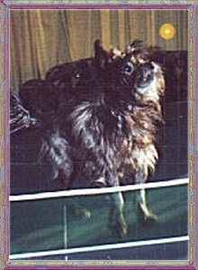
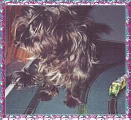

Oh
yes. This is how it should be. My very own page and being treated as Royalty.WOOF!!
Do you like my crown? I think it kinda suits me.
So
you would like to know a bit about me, other than I'm gorgeous, and the
boss of this family??
Well
I didn't have a very good start in life.I was with humans who treated me
very badly.I used to watch these people with their 2 dogs and they all
seemed so happy.I decided to visit them and it was lovely not to be kicked
and yelled at and hurt like the other humans did to me.
It
took me a while before I completely trusted them, but I'm so glad I did.I
learnt to love and be loved.It's such a nice feeling.
That
was many years ago,and I have been one very happy spoilt little girl ever
since.WOOF!!
Just
in case you forgot how cute I am while you've been reading this,here's
a pic of me with the flowers mum got for her birthday.The flowers would
be a bit boring without me there don't you think?
As
much as I love this family,I've had to work hard here too.
Do
you have any idea how hard it is to train young ones to do what I tell
them?
I
have them well trained now tho,especially at night when everyone is asleep
and I hear a noise just one bark from me and the other 2 go racing outside
to chek it out and come back and tell me what it was.. and I stay all nice
and warm and DRY!!.....WOOF!!
BUT!!!
I do go out sometimes.I even have proof.Here's a pic of me just going back
in thru the doggie door we have here.
I
also have another very important job to do.When mum isn't feeling very
well I follow her everywhere.I even sit on a towel in the bathroom while
she has a shower to make sure she's ok.This is my very bestest favourite
job.WOOF!! Mum says I'm her very special angel.That makes me feel so good.
I
do have lots of fun too. I romp with the other dogs and even love a game
of table tennis and playing with trains. Not real ones.I have some more
pics for you to see.I know I'm so cute you can never see too many of me.WOOF!!
So sit back and enjoy yourself and then go see my little sister and BIG
little brother. WOOF!!
Here's
a pic of me on the table tennis table and another, same table but this
time with a train set on it.



Thank
you for visiting. I hope you had fun and don't forget to visit Mindy
and Toos while you're here.WOOF! WOOF!!